Установка Stride
Начинающий
Загрузите установщик Stride (StrideSetup.exe) с Веб-сайта.
Дважды щелкните файл.StrideSetup.exe .
Откроется Мастер установки Stride .
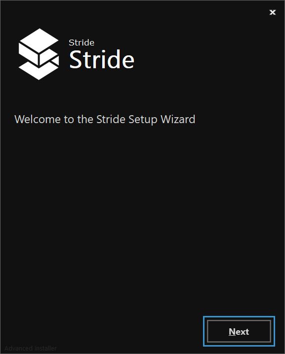
Нажмите Далее (Next).
Откроется окно Тип установки Stride.
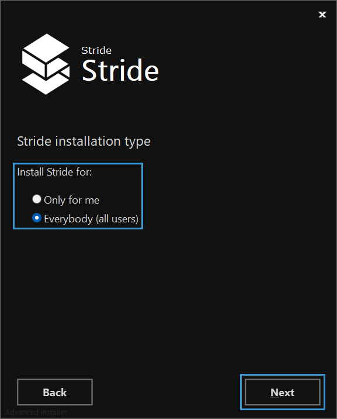
Выберите тип установки и нажмите Далее (Next).
Откроется окно Выбор папки для установки.
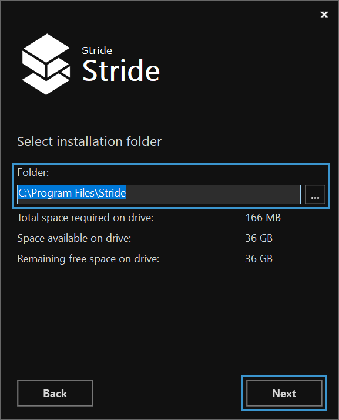 Выберите папку для установки Stride и нажмите Далее (Next).
Откроется окно Создание ярлыков приложеня.
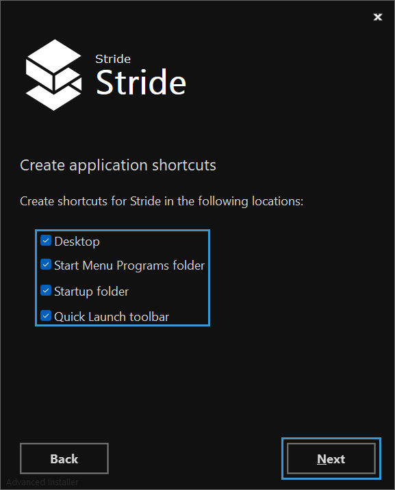
Выберите, какие ярлыки вы хотите создать в Stride, и нажмите Далее (Next).
Откроется окно Готово к установке (Ready to Install) .
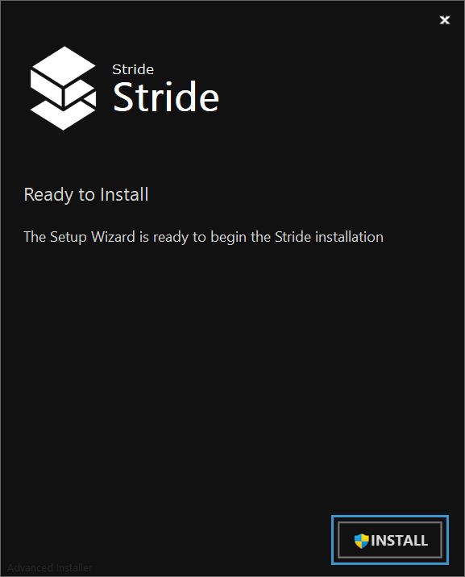
Нажмите Установить(Install).
Начинается установка.
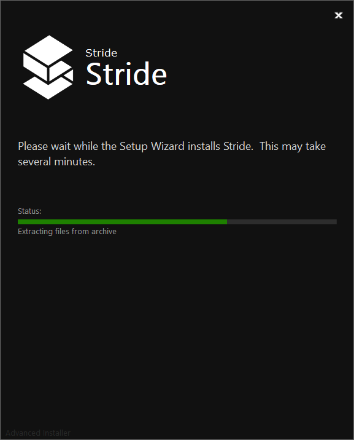
После закрытия установщика Stride создаст ярлыки в выбранных вами местах и запустится Stride Launcher.
В первый раз вам будет предложено принять политику конфиденциальности.
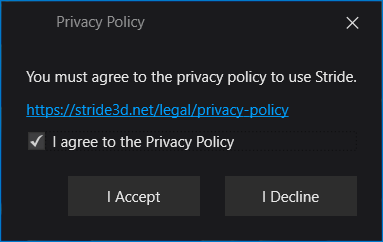
Установите галочку Я согласен с Политикой конфиденциальности (I agree to the Privacy Policy), и затем нажмитеk Я согласен (I Accept).
Откроется окно Stride Launcher.
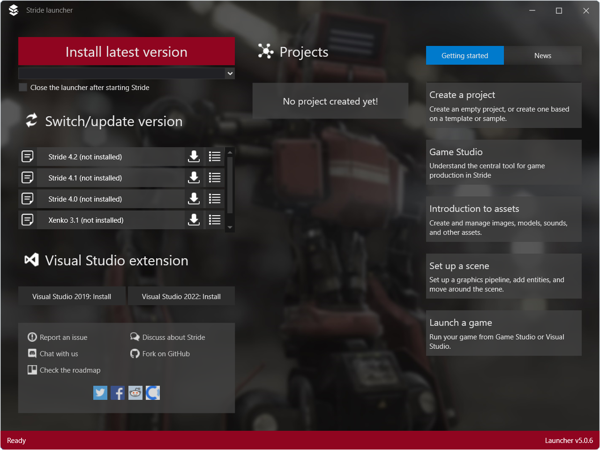
Stride Launcher предложит вам установить последнюю версию Stride.

Нажмите Да(Yes).
Начнется установка последней версии Stride.
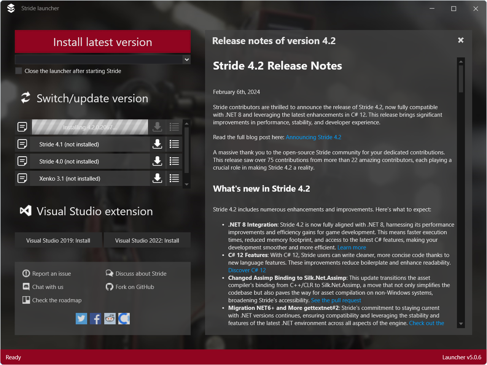
В процессе установки отображаются примечания к выпуску.
Во время установки вам может быть предложено установить .NET SDK, если он еще не установлен на вашем компьютере.
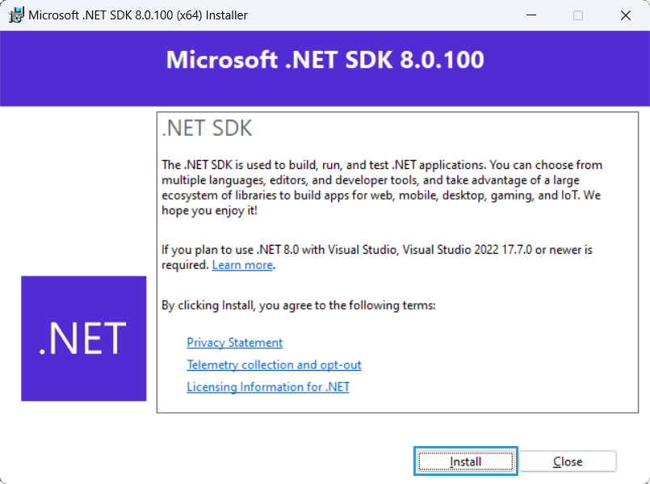
Нажмите Установить (Install).
Stride Launcher спросит, хотите ли вы установить интеграцию с Visual Studio? Это позволяет редактировать шейдеры непосредственно из Visual Studio и обеспечивает подсветку синтаксиса, анализ кода в реальном времени, проверкой ошибок и навигацией. Установка интеграции не является обязательной, но мы рекомендуем ее.

Теперь Stride установлен и готов к использованию.
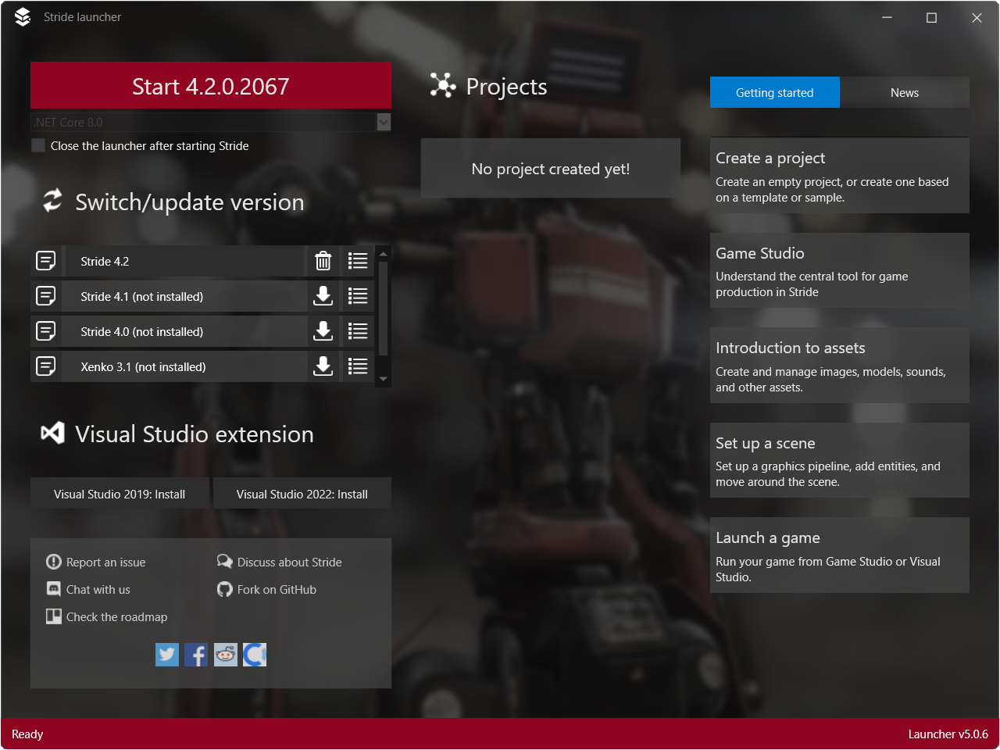
Note
Если вы не установите требуемые компоненты, Stride не запустится. В этом случае вы можете загрузить и установить требуемые компоненты отдельно. Инструкции см. в разделе Устранение неполадок — Stride не запускается.
Либо удалите Stride, перезапустите установщик Stride и установите необходимые компоненты при появлении соответствующего запроса.